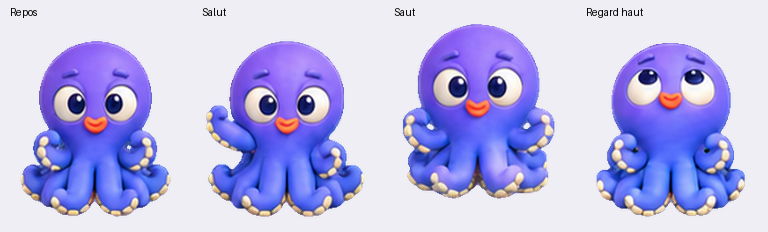

Poulpi : référence et modèle dans l’application
Référence originale fournie, sans modification :

Captures réelles du simulateur, recadrées à l’affichage pour comparer le personnage. La nouvelle version est une reconstruction 3D ; les deux bras relevés sont maintenant rattachés uniquement sous le corps, avec un espace visible devant les joues.
Examiner la nouvelle version à 360° · Capture complète